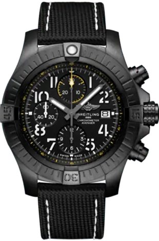

본문 콘텐츠영역
History
숙련된 시계제작자였던 레옹 브라이틀링(Léon Breitling) 은 자신의 생티미에(St. Imier) 공방에서 시계와 지능 적인측정 도구를 제작했습니다. 얼마 지나지 않아, 레옹이 개발한 포켓 워치의 혁신적인 기능으로 회사 는 엄청난 명성을 얻게 됩니다.
- 레옹 브라이틀링(LÉON BREITLING)은 크로노그래프 개발에 주력했는데
- 레옹 브라이틀링(Léon Breitling)은 크로노그래프 개발에 주력했는데, 당시에는 산업, 군사, 과학 분야뿐 아니라 운동관련 기관에서도 이 기술에 대한 수요가 증가하고 있었습니다. 1889년, 레옹 브라이틀링(Léon Breitling)은 세련된 디자인, 복잡하지 않은 제조 공정, 그리고 간단한 유지보수로 경쟁자들과 차별화되는 단 순화시킨 모델로 특허를 받았습니다.
Philosophy
제품,지구 그리고 프로세스

- 브라이틀링 가치 사슬 전반에 긍정적인 영향 창출
- 브라이틀링은 제품의 긍정적인 사회적 환경적 영향을 향상시킬 방법을 지속적으로 찾고 있습니다. 브라이틀링의 주요 이니셔티브에는 100% Swiss Better Gold 소싱, 업계 최고의 100% 업사이클 패키징 출시, 공급업체 참여를 통해 지속 가능한 변화를 추구하기 위한 행동 계획 수립 등이 포함됩니다.
- 기후 변화에 대한 조치
- 환경 영향을 측정하고, 이를 완화 및 중화합니다. 탄소정보공개 프로젝트(Carbon Disclosure Project, CDP)에 매년 관련 정보를 보고하며, 과학 기반 목표 이니셔티브(Science Based Targets Initiative, SBTi)에 헌신하며, 직접 및 간접적 배출량을 상쇄합니다. 2025년까지, 브라이틀링은 현재 본사에서 사용 중인 100% 재생 에너지를 전 세계로 확대하고 플라스틱 폐기물을 발생시키지 않는 것을 목표로 합니다.
- 프로세스: 의미 있는 투명성 제공
- 브라이틀링은 업계 최초로 세계 경제 포럼/국제 비즈니스 협의회(WEF/IBC) 이해관계자 자본주의 메트릭스를 충족시키는 지속가능성 미션 보고서에 진행 상황을 투명하게 보고할 예정입니다. 브라이틀링의 가치는 ESG 정책, 직원 COC 및 공급업체 COC에 자세히 명시되어 있습니다.
Models
품질, 디자인 그리고 성능은 브라이틀링 시계를 정의합니다.
지나칠 수 없는 아름다움이 더해진 정확하고 신뢰할 수 있는 브라이틀링을 소유해보십시오.
-
- 크로노맷
- 우아한 스포츠 시계
-
- 프로페셔널
- 전문가를 위한 도구
-
- 네비타이머
- 파일럿의 상징
-
- 슈퍼오션
- 해상에서의 스타일
-

- 어벤져
- 최고의 성능
Service
브라이틀링 시계를 정기적으로 유지보수하면, "모터"가 그 성능과 정확성을 장기간 유지할 수 있습니다.
정기적으로 실시되는 유지보수는 부품 세척, 마모된 부품 교체 및 윤활유 주입으로 구성됩니다.
-
- 유지보수 서비스
- 다음 항목에 대하여 2년마다 유지보수 서비스가 권장됩니다.
- 유지보수 서비스
- 다음 항목에 대하여 2년마다 유지보수 서비스가 권장됩니다. 무브먼트 파라미터 및 시계 기능 확인, 전체 씰 교체, 방수 기능 확인, 케이스 및 메탈 브레이슬릿 세척, 쿼츠 모델의 배터리 교체.
-
- 종합 서비스
- 다음 항목에 대하여 4~6년마다 종합 서비스가 권장됩니다.
- 종합 서비스
- 다음 항목에 대하여 4~6년마다 종합 서비스가 권장됩니다. 분해, 세척, 특정 핸즈를 포함하여 표준 무브먼트 부품 교체, 조립, 윤활유 주입, 무브먼트 기능 파라미터의 조정 및 설정, 전체 씰 교체, 방수 기능 확인, 쿼츠 모델의 배터리 교체, 케이스 및 브레이슬릿 폴리싱.
-
- 폴리싱 서비스
- 폴리싱 서비스는 케이스 및 브레이슬릿의 폴리싱 서비스를 제공합니다.
- 폴리싱 서비스
- 폴리싱 서비스는 케이스 및 브레이슬릿의 폴리싱 서비스를 제공합니다. 폴리싱 서비스는 유지보수 서비스와 함께 의뢰하는 경우에만 이용하실 수 있으며, DLC 코팅 및 브라이트라이트 소재가 적용된 모델은 폴리싱 서비스가 제공되지 않습니다.